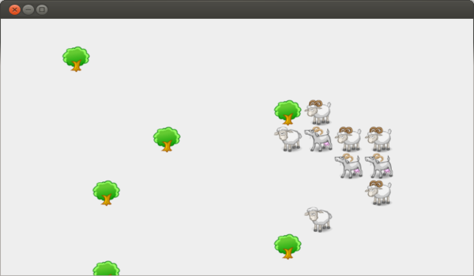

 Universe is a program that simulates a 2D environment. The environment is populated by animals and plants; the simulation involves growing of animals and plants, movements of animals, and planning for food search.
The simulation evolves in rounds and the state of each element at a given step is a function of the other elements and of the state of the simulation in the previous step. This structure allows one to express several aspects of the computation functionally. However, the elements of the simulation are mutable objects that encapsulate state, so the OO and the functional style must be properly combined.
Universe on GitHub: